library(rstatix)
library(EnvStats)
library(modeest)
library(scales)
library(questionr)
library(MESS)
library(ggsci)
library(ggdist)
library(patchwork)
library(here)
library(tidyverse)2 Descriptive statistics
Descriptive statistics are used to describe and organize the basic characteristics of the data in a study. The classical descriptive statistics allow us to have a quick glance of the central tendency and the extent of dispersion of values. They are useful in understanding the data distributions and comparing them.
When we have finished this Chapter, we should be able to:
2.1 Packages we need
We need to load the following packages:
2.2 Importing the data
We will use the dataset named arrhythmia which is a .xlsx file. It is supposed that we work with RStudio Projects and the dataset is stored in the subfolder with the name “data” inside the RStudio Project folder. If this is the case, we can read the data using a relative path with the following code:
NOTE: The path of a file/directory is its location/address in the file system. There are two kinds of paths: absolute path such as “C:/My_name/../my_project/data/arrhythmia.xlsx” and relative path such as “data/arrhythmia.xlsx”.
The function here() allows us to navigate throughout each of the subfolders and files within a given RStudio Project using relative paths .
library(readxl)
arrhythmia <- read_excel(here("data", "arrhythmia.xlsx"))We take a look at the data:
glimpse(arrhythmia)Rows: 428
Columns: 8
$ age <dbl> 75, 56, 54, 55, NA, 40, 49, 44, 50, 62, 45, 54, 30, 44, 47, 47…
$ sex <chr> "male", "female", "male", "male", "male", "female", "female", …
$ height <dbl> 190, 165, 172, 175, 190, 160, 162, 168, 167, 170, 165, 172, 17…
$ weight <dbl> 80, 64, 95, 94, 80, 52, 54, 56, 67, 72, 86, 58, 73, 88, 48, 59…
$ QRS <dbl> 91, 81, 138, 115, 88, 77, 78, 84, 89, 152, 77, 78, 133, 77, 75…
$ HR <dbl> 63, 53, 75, 71, 75, 70, 67, 64, 63, 70, 72, 73, 56, 72, 76, 67…
$ bmi <dbl> 22.2, 23.5, 32.1, 30.7, 22.2, 20.3, 20.6, 19.8, 24.0, 24.9, 31…
$ bmi_cat <chr> "normal", "normal", "obese", "obese", "normal", "normal", "nor…Additionally, we can get some basic summary measures for each variable:
summary(arrhythmia) age sex height weight
Min. :18.00 Length:428 Min. :146 Min. : 18.0
1st Qu.:38.00 Class :character 1st Qu.:160 1st Qu.: 60.0
Median :48.00 Mode :character Median :165 Median : 70.0
Mean :48.67 Mean :165 Mean : 70.1
3rd Qu.:59.00 3rd Qu.:170 3rd Qu.: 80.0
Max. :83.00 Max. :190 Max. :176.0
NA's :3
QRS HR bmi bmi_cat
Min. : 55.00 Min. : 44.00 Min. : 5.20 Length:428
1st Qu.: 80.00 1st Qu.: 65.00 1st Qu.:22.90 Class :character
Median : 87.00 Median : 72.00 Median :25.40 Mode :character
Mean : 91.79 Mean : 73.55 Mean :25.72
3rd Qu.: 96.00 3rd Qu.: 80.00 3rd Qu.:28.10
Max. :178.00 Max. :152.00 Max. :61.60
The data set arrhythmia has 428 patients (rows) and includes 8 variables (columns) as follows:
- age: age (yrs)
- sex: sex (male, female)
- height: height (cm)
- weight: weight (kg)
- QRS: mean duration of QRS (ms) 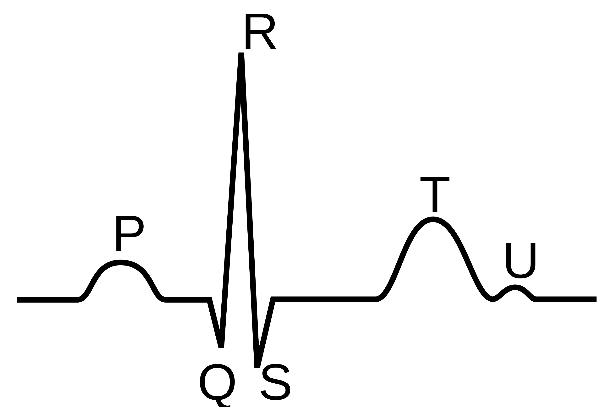
- HR: heart rate (beats/min)
- bmi
- bmi_cat (4 levels: underweight, normal, overweight, obese)
We might have noticed that the categorical variables sex and bmi_cat are recognized of character <chr> type. We can use the factor() function inside the mutate() to convert the variables to factors as follows:
arrhythmia <- arrhythmia %>%
mutate(sex = factor(sex),
bmi_cat = factor(bmi_cat, levels = c("underweight", "normal",
"overweight", "obese")))- 1
-
bmi_catis an ordered variable so the order of the levels has to be specified explicitly in thefactor()function.
Let’s look at the data again with the glipmse() function:
glimpse(arrhythmia)Rows: 428
Columns: 8
$ age <dbl> 75, 56, 54, 55, NA, 40, 49, 44, 50, 62, 45, 54, 30, 44, 47, 47…
$ sex <fct> male, female, male, male, male, female, female, male, female, …
$ height <dbl> 190, 165, 172, 175, 190, 160, 162, 168, 167, 170, 165, 172, 17…
$ weight <dbl> 80, 64, 95, 94, 80, 52, 54, 56, 67, 72, 86, 58, 73, 88, 48, 59…
$ QRS <dbl> 91, 81, 138, 115, 88, 77, 78, 84, 89, 152, 77, 78, 133, 77, 75…
$ HR <dbl> 63, 53, 75, 71, 75, 70, 67, 64, 63, 70, 72, 73, 56, 72, 76, 67…
$ bmi <dbl> 22.2, 23.5, 32.1, 30.7, 22.2, 20.3, 20.6, 19.8, 24.0, 24.9, 31…
$ bmi_cat <fct> normal, normal, obese, obese, normal, normal, normal, normal, …Now, both variables, sex and bmi_cat, have become factors with levels.
2.3 Summarizing Categorical Data (Frequency Statistics)
The first step to analyze categorical data is to count the different types of labels and calculate the frequencies. The set of frequencies of all the possible categories is called the frequency distribution of the variable. Additionally, we can express the frequencies as proportions of the total sample size (relative frequencies, %).
We can generate a frequency table for the sex variable using the freq() function from the {questionr} package:
freq(arrhythmia$sex, cum = T, total = T, valid = F) n % %cum
female 237 55.4 55.4
male 191 44.6 100.0
Total 428 100.0 100.0The table shows the number of patients (n) in each category (absolute frequency), the percentage (%) contribution of each category to the total (relative frequency), and the commutative percentage (%cum). Of note, the percentages add up to 100%.
Similarly, we can create the frequency table for the bmi_cat variable:
freq(arrhythmia$bmi_cat, cum = T, total = T, valid = F) n % %cum
underweight 11 2.6 2.6
normal 192 44.9 47.4
overweight 167 39.0 86.4
obese 58 13.6 100.0
Total 428 100.0 100.0
We can also sort the BMI categories in a decreasing order of frequencies:
freq(arrhythmia$bmi_cat, cum = T, total = T, valid = F, sort = "dec") n % %cum
normal 192 44.9 44.9
overweight 167 39.0 83.9
obese 58 13.6 97.4
underweight 11 2.6 100.0
Total 428 100.0 100.0In the above table we observe that a large proportion of patients are overweight (167 out of 428, 39.0%).
In addition to tabulating each variable separately, we might be interested in whether the distribution of patients across each sex is different for each BMI category.
tab <- table(arrhythmia$sex, arrhythmia$bmi_cat)
rprop(tab, percent = T, total = F, n = T)
underweight normal overweight obese n
female 3.0% 48.5% 32.1% 16.5% 237
male 2.1% 40.3% 47.6% 9.9% 191We can see that the percentage of overweight male patients (47.6%) is higher than overweight female patients (32.1%). In contrast, the percentage of obese male patients (9.9%) is lower than obese female patients (16.5%).
2.4 Displaying Categorical Data
While frequency tables are extremely useful, the best way to investigate a dataset is to plot it. For categorical variables, such as sex and bmi_cat, it is straightforward to present the number in each category, usually indicating the frequency and percentage of the total number of patients. When shown graphically this is called a bar plot.
A. Simple Bar Plot
A simple bar plot is an easy way to make comparisons across categories. Figure 2.2 shows the BMI categories for 428 patients. Along the horizontal axis (x-axis) are the different BMI categories whilst on the vertical axis (y-axis) is the percentage (%). The height of each bar represents the percentage of the total patients in that category. For example, it can be seen that the percentage of overweight participants is 39% (167/428).
# create a data frame with ordered BMI categories and their counts
dat1 <- arrhythmia %>%
count(bmi_cat) %>%
mutate(pct = round_percent(n, 1))
# plot the data
ggplot(dat1, aes(x = bmi_cat, y = pct)) +
geom_col(width=0.65, fill = "steelblue4") +
geom_text(aes(label=paste0(pct, "%")),
vjust=1.6, color = "white", size = 3) +
labs(x = "BMI category", y = "Percent",
caption = "Number of patients: 428") +
scale_y_continuous(labels = scales::percent_format(scale = 1)) +
theme_minimal(base_size = 12)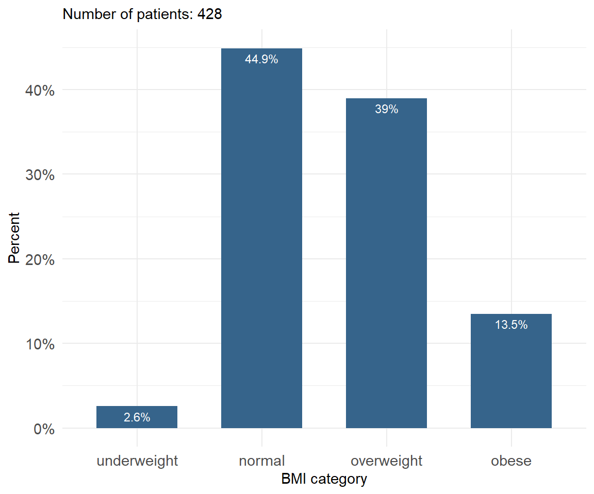
B. Side-by-side and Grouped Bar Plots
If the data are further classified into whether the patient was male or female then it becomes impossible to present this information to a single bar plot. In this case, we can present the data as a side-by-side bar plot (Figure 2.3) or, even better, as a grouped bar plot to make the visual comparisons easier (Figure 2.4).
# create a data frame with ordered BMI categories and their counts by sex
dat2 <- arrhythmia %>%
count(bmi_cat, sex) %>%
group_by(sex) %>%
mutate(pct = round_percent(n, 1)) %>%
ungroup()
ggplot(dat2) +
geom_col(aes(bmi_cat, pct, fill = sex), width=0.7, position = "dodge") +
geom_text(aes(bmi_cat, pct, label = paste0(pct, "%"),
group = sex), color = "white", size = 3,vjust=1.2,
position = position_dodge(width = .9)) +
labs(x = "BMI category", y = "Percent",
caption = "female: n=237, male: n=191") +
scale_y_continuous(labels = scales::percent_format(scale = 1)) +
scale_fill_jco() +
theme_minimal(base_size = 12) +
theme(legend.position="none",
axis.text.x = element_text(angle = 45, hjust = 1)) +
facet_wrap(~sex, ncol = 2)ggplot(dat2) +
geom_col(aes(bmi_cat, pct, fill = sex), width = 0.8, position = "dodge") +
geom_text(aes(bmi_cat, pct, label = paste0(pct, "%"),
group = sex), color = "white", size = 3,vjust=1.2,
position = position_dodge(width = .9)) +
labs(x = "BMI category", y = "Percent",
caption = "female: n=237, male: n=191") +
scale_y_continuous(labels = scales::percent_format(scale = 1)) +
scale_fill_jco() +
theme_minimal(base_size = 12)
C. Stacked Bar Plot
Unlike side-by-side or grouped bar plots, stacked bar plots segment their bars. A 100% Stack Bar Plot shows the percentage-of-the-whole of each group. This makes it easier to see if relative differences exist between quantities in each group (Figure 2.5).
# create a data frame with ordered BMI categories and their counts by sex
dat3 <- arrhythmia %>%
group_by(sex) %>%
count(bmi_cat) %>%
mutate(pct = round_percent(n, 2)) %>%
ungroup()
ggplot(dat3, aes(x = sex, y = pct, fill = forcats::fct_rev(bmi_cat)))+
geom_bar(stat = "identity", width = 0.8)+
geom_text(aes(label = paste0(round(pct, 1), "%"), y = pct),
position = position_stack(vjust = 0.5)) +
coord_flip()+
scale_fill_simpsons() +
scale_y_continuous(labels = scales::percent_format(scale = 1))+
labs(x = "Sex", y = "Percent", fill = "BMI category") +
theme_minimal(base_size = 12)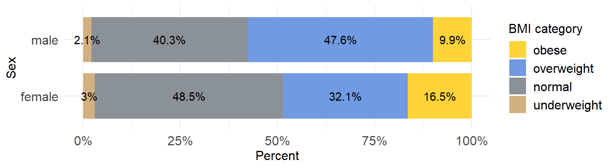
Stacked bar plots tend to become confusing when the variable has many levels
One issue to consider when using stacked bar plots is the number of variable levels: when dealing with many categories, stacked bar plots tend to become rather confusing.
2.5 Summarizing Numerical Data
Summary measures are single numerical values that summarize a large number of values. Numeric data are described with two main types of summary measures (Table 2.1):
measures of central location (where the center of the distribution of the values in a variable is located)
measures of dispersion (how widely the values are spread above and below the central value)
| Measures of central location | Measures of dispersion |
|---|---|
|
|
2.6 Summary statistics
Measures of central location
A. Sample Mean or Average
Advantages of mean
- It uses all the data values in the calculation.
- It is algebraically defined and thus mathematically manageable.
Disadvantages of mean
- It is highly affected by the presence of a few abnormally high or abnormally low values (outliers), so it is not an appropriate average for highly skewed (asymmetrical) distributions.
- It can not be determined easily by inspection of the data.
Let \(x_1, x_2,...,x_{n-1}, x_n\) be a set of n measurements. The arithmetic sample mean or average, \(\bar{x}\), is the sum of the observations divided by their number n, thus:
\[ \bar{x}= \frac{x_1 + x_2 + ... + x_{n-1} + x_n}{n} = \frac{1}{n}\sum_{i=1}^{n}x_{i} \] where \(x_{i}\) represents the individual sample values and \({\sum_{i=1}^{n}x_{i}}\) their sum.
Let’s calculate the sample mean of age variable in our dataset:
Sample mean of age
mean(arrhythmia$age, na.rm = TRUE)- 1
-
If some of the values in a vector are missing (
NA), then the mean of the vector can not be defined. The argumentna.rm = TRUEremoves the missing values and the mean is calculated using the remaining values.
[1] 48.67059arrhythmia %>%
dplyr::summarise(mean = mean(age, na.rm = TRUE))# A tibble: 1 × 1
mean
<dbl>
1 48.7B. Median of the sample
The sample median, md, is an alternative measure of location, which is less sensitive to outliers. The median is calculated by first sorting the observed values (i.e. arranging them in an ascending/descending order) and selecting the middle one. If the sample size n is odd, the median is the number at the middle of the ordered observations. If the sample size is even, the median is the average of the two middle numbers.
Advantage of sample median
- It is not affected by outliers.
Disadvantage of sample median
- It does not take into account the precise value of each observation and hence does not use all the information available in the data.
Therefore, the sample median, md, of n observations is:
the \(\frac{n+1}{2}\)th ordered value, \(md=x_{\frac{n+1}{2}}\), if n is odd.
the average of the \(\frac{n}{2}\)th and \(\frac{n+1}{2}\)th ordered values, \(md=\frac{1}{2}(x_{\frac{n}{2}}+x_{\frac{n+1}{2}})\), if n is even.
Sample median of age
median(arrhythmia$age, na.rm = TRUE)[1] 48arrhythmia %>%
dplyr::summarise(median = median(age, na.rm = TRUE))# A tibble: 1 × 1
median
<dbl>
1 48C. Mode of the sample
A third measure of location is the mode. This is the value that occurs most frequently in a set of data values. Note that some dataset do not have a mode because each value occurs only once.
NOTE: When a distribution has to modes (peaks) is called Bimodal distribution. This can be caused by mixing two populations together. For example, height might appear to have a bimodal distribution if men and women are included in the study.
Base R does not provide a function for calculating the mode of a numeric variable. However, we can download the package called {modeest} and use the mlv() function specifying the method as "mfv". This method returns the most frequent value(s):
mlv(arrhythmia$age, method = "mfv", na.rm = TRUE)[1] 47Measures of Dispersion
A. Sample Variance
Sample variance, \(s^2\), is a measure of spread of the data. It is calculated by taking the sum of the squared deviations from the sample mean and dividing by \(n-1\):
\[variance = s^2 = \frac{\sum\limits_{i=1}^n (x -\bar{x})^2}{n-1}\]
Sample variance of age
var(arrhythmia$age, na.rm = TRUE)[1] 199.4243arrhythmia %>%
dplyr::summarise(variance = var(age, na.rm = TRUE))# A tibble: 1 × 1
variance
<dbl>
1 199.The variance is expressed in square units, so it is not suitable measure for describing variability of data.
B. Standard deviation of the sample
Standard deviation (denoted as sd or s) of a data set is the square root of the sample variance:
\[sd= s = \sqrt{s^2} = \sqrt\frac{\sum_{i=1}^{n}(x_{i}-\bar{x})^2}{n-1}\]
Standard deviation of age
sd(arrhythmia$age, na.rm = TRUE)[1] 14.12177arrhythmia %>%
dplyr::summarise(standard_deviation = sd(age, na.rm = TRUE))# A tibble: 1 × 1
standard_deviation
<dbl>
1 14.1Standard deviation is expressed in the same units as the original values.
C. Range of the sample
The Range is the difference between the minimum (lowest) and maximum (highest) values. In R, the range() function returns a vector containing the minimum and maximum values:
One disadvantage of using range as a measure of dispersion is its sensitivity to outliers.
range(arrhythmia$age, na.rm = TRUE)[1] 18 83The difference between the two values, 83 - 18, is:
diff(range(arrhythmia$age, na.rm = TRUE))[1] 65D. Inter-quartile range of the sample
IQR(arrhythmia$age, na.rm = TRUE)[1] 21quantile(arrhythmia$age, prob=c(0.25, 0.75), na.rm = T, type=1)25% 75%
38 59 Let’s calculate the summary statistics for the age variable in our dataset.
Summary statistics: Variable age
arrhythmia %>%
dplyr::summarise(
n = n(),
na = sum(is.na(age)),
min = min(age, na.rm = TRUE),
q1 = quantile(age, 0.25, na.rm = TRUE),
median = quantile(age, 0.5, na.rm = TRUE),
q3 = quantile(age, 0.75, na.rm = TRUE),
max = max(age, na.rm = TRUE),
mean = mean(age, na.rm = TRUE),
sd = sd(age, na.rm = TRUE),
skewness = EnvStats::skewness(age, na.rm = TRUE),
kurtosis= EnvStats::kurtosis(age, na.rm = TRUE)
)# A tibble: 1 × 11
n na min q1 median q3 max mean sd skewness kurtosis
<int> <int> <dbl> <dbl> <dbl> <dbl> <dbl> <dbl> <dbl> <dbl> <dbl>
1 428 3 18 38 48 59 83 48.7 14.1 0.0557 -0.605arrhythmia %>%
dlookr::describe(age) %>%
select(described_variables, n, na, mean, sd, p25, p50, p75, skewness, kurtosis)Registered S3 method overwritten by 'httr':
method from
print.response rmutil# A tibble: 1 × 10
described_variables n na mean sd p25 p50 p75 skewness kurto…¹
<chr> <int> <int> <dbl> <dbl> <dbl> <dbl> <dbl> <dbl> <dbl>
1 age 425 3 48.7 14.1 38 48 59 0.0557 -0.605
# … with abbreviated variable name ¹kurtosispsych::describe(arrhythmia$age)Registered S3 method overwritten by 'psych':
method from
plot.residuals rmutil vars n mean sd median trimmed mad min max range skew kurtosis se
X1 1 425 48.67 14.12 48 48.61 16.31 18 83 65 0.06 -0.62 0.69
Summary statistics: Variable QRS
arrhythmia %>%
dplyr::summarise(
n = n(),
na = sum(is.na(QRS)),
min = min(QRS, na.rm = TRUE),
q1 = quantile(QRS, 0.25, na.rm = TRUE),
median = quantile(QRS, 0.5, na.rm = TRUE),
q3 = quantile(QRS, 0.75, na.rm = TRUE),
max = max(QRS, na.rm = TRUE),
mean = mean(QRS, na.rm = TRUE),
sd = sd(QRS, na.rm = TRUE),
skewness = EnvStats::skewness(QRS, na.rm = TRUE),
kurtosis= EnvStats::kurtosis(QRS, na.rm = TRUE)
)# A tibble: 1 × 11
n na min q1 median q3 max mean sd skewness kurtosis
<int> <int> <dbl> <dbl> <dbl> <dbl> <dbl> <dbl> <dbl> <dbl> <dbl>
1 428 0 55 80 87 96 178 91.8 19.1 1.88 3.94arrhythmia %>%
dlookr::describe(QRS) %>%
select(described_variables, n, na, mean, sd, p25, p50, p75, skewness, kurtosis)# A tibble: 1 × 10
described_variables n na mean sd p25 p50 p75 skewness kurto…¹
<chr> <int> <int> <dbl> <dbl> <dbl> <dbl> <dbl> <dbl> <dbl>
1 QRS 428 0 91.8 19.1 80 87 96 1.88 3.94
# … with abbreviated variable name ¹kurtosispsych::describe(arrhythmia$QRS) vars n mean sd median trimmed mad min max range skew kurtosis se
X1 1 428 91.79 19.14 87 88.48 11.86 55 178 123 1.86 3.85 0.93
B. Summary statistics by group
Next, we are interested in calculating the summary statistics of the age variable for males and females, separately.
Summary statistics: age stratified by sex
summary_age_sex <- arrhythmia %>%
group_by(sex) %>%
dplyr::summarise(
n = n(),
na = sum(is.na(age)),
min = min(age, na.rm = TRUE),
q1 = quantile(age, 0.25, na.rm = TRUE),
median = quantile(age, 0.5, na.rm = TRUE),
q3 = quantile(age, 0.75, na.rm = TRUE),
max = max(age, na.rm = TRUE),
mean = mean(age, na.rm = TRUE),
sd = sd(age, na.rm = TRUE),
skewness = EnvStats::skewness(age, na.rm = TRUE),
kurtosis= EnvStats::kurtosis(age, na.rm = TRUE)
) %>%
ungroup()
summary_age_sex# A tibble: 2 × 12
sex n na min q1 median q3 max mean sd skewness kurto…¹
<fct> <int> <int> <dbl> <dbl> <dbl> <dbl> <dbl> <dbl> <dbl> <dbl> <dbl>
1 female 237 2 19 36 47 58.5 83 47.6 14.5 0.163 -0.723
2 male 191 1 18 41 49 59 80 49.9 13.5 -0.0630 -0.343
# … with abbreviated variable name ¹kurtosisarrhythmia %>%
group_by(sex) %>%
dlookr::describe(age) %>%
select(described_variables, sex, n, na, mean, sd, p25, p50, p75, skewness, kurtosis)# A tibble: 2 × 11
described_va…¹ sex n na mean sd p25 p50 p75 skewn…² kurto…³
<chr> <fct> <int> <int> <dbl> <dbl> <dbl> <dbl> <dbl> <dbl> <dbl>
1 age fema… 235 2 47.6 14.5 36 47 58.5 0.163 -0.723
2 age male 190 1 49.9 13.5 41 49 59 -0.0630 -0.343
# … with abbreviated variable names ¹described_variables, ²skewness, ³kurtosispsych::describeBy(arrhythmia$age, group = arrhythmia$sex)
Descriptive statistics by group
group: female
vars n mean sd median trimmed mad min max range skew kurtosis se
X1 1 235 47.64 14.53 47 47.4 16.31 19 83 64 0.16 -0.75 0.95
------------------------------------------------------------
group: male
vars n mean sd median trimmed mad min max range skew kurtosis se
X1 1 190 49.94 13.53 49 50.05 13.34 18 80 62 -0.06 -0.39 0.98If we want to save our descriptive statistics, calculated in R, we can use the write_xlsx() function from {writexl} package. In the example below, we are saving the summary_age_sex table to a .xlsx file in the data folder of our RStudio Project:
library(writexl)
write_xlsx(summary_age_sex, here("data", "summary_age_sex.xlsx"))
Summary statistics: QRS stratified by sex
arrhythmia %>%
group_by(sex) %>%
dplyr::summarise(
n = n(),
na = sum(is.na(QRS)),
min = min(QRS, na.rm = TRUE),
q1 = quantile(QRS, 0.25, na.rm = TRUE),
median = quantile(QRS, 0.5, na.rm = TRUE),
q3 = quantile(QRS, 0.75, na.rm = TRUE),
max = max(QRS, na.rm = TRUE),
mean = mean(QRS, na.rm = TRUE),
sd = sd(QRS, na.rm = TRUE),
skewness = EnvStats::skewness(QRS, na.rm = TRUE),
kurtosis= EnvStats::kurtosis(QRS, na.rm = TRUE)
) %>%
ungroup()# A tibble: 2 × 12
sex n na min q1 median q3 max mean sd skewness kurto…¹
<fct> <int> <int> <dbl> <dbl> <dbl> <dbl> <dbl> <dbl> <dbl> <dbl> <dbl>
1 female 237 0 55 77 82 90 163 86.4 17.2 2.22 5.65
2 male 191 0 71 87 92 102. 178 98.5 19.4 1.92 3.65
# … with abbreviated variable name ¹kurtosisarrhythmia %>%
group_by(sex) %>%
dlookr::describe(QRS) %>%
select(described_variables, sex, n, na, mean, sd, p25, p50, p75, skewness, kurtosis)# A tibble: 2 × 11
described_va…¹ sex n na mean sd p25 p50 p75 skewn…² kurto…³
<chr> <fct> <int> <int> <dbl> <dbl> <dbl> <dbl> <dbl> <dbl> <dbl>
1 QRS fema… 237 0 86.4 17.2 77 82 90 2.22 5.65
2 QRS male 191 0 98.5 19.4 87 92 102. 1.92 3.65
# … with abbreviated variable names ¹described_variables, ²skewness, ³kurtosispsych::describeBy(arrhythmia$QRS, group = arrhythmia$sex)
Descriptive statistics by group
group: female
vars n mean sd median trimmed mad min max range skew kurtosis se
X1 1 237 86.4 17.18 82 83.23 8.9 55 163 108 2.19 5.44 1.12
------------------------------------------------------------
group: male
vars n mean sd median trimmed mad min max range skew kurtosis se
X1 1 191 98.48 19.37 92 94.74 10.38 71 178 107 1.89 3.45 1.4
2.7 Displaying Numerical Data
A. Histogram
The most common way of presenting a frequency distribution of a continuous variable is a histogram. Histograms (Figure 2.6) depict the distribution of the data as a series of bars without space between them. Each bar typically covers a range of numeric values called a bin or class; a bar’s height indicates the frequency of observations with a value within the corresponding bin.
# Histogram of age
arrhythmia %>%
ggplot(aes(x = age)) +
geom_histogram(binwidth = 8, fill = "steelblue4", color = "#8fb4d9", alpha = 0.6) +
theme_minimal(base_size = 16) +
labs(title = "Histogram: age", y = "Frequency")
# Histogram of QRS
arrhythmia %>%
ggplot(aes(x = QRS)) +
geom_histogram(binwidth = 8, fill = "steelblue4", color = "#8fb4d9", alpha = 0.6) +
theme_minimal(base_size = 16) +
labs(title = "Histogram: QRS", y = "Frequency")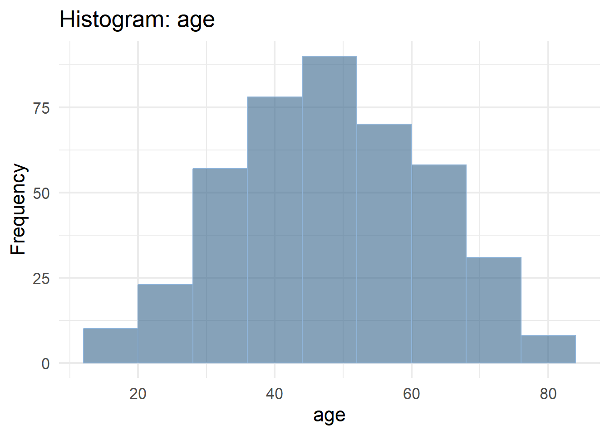
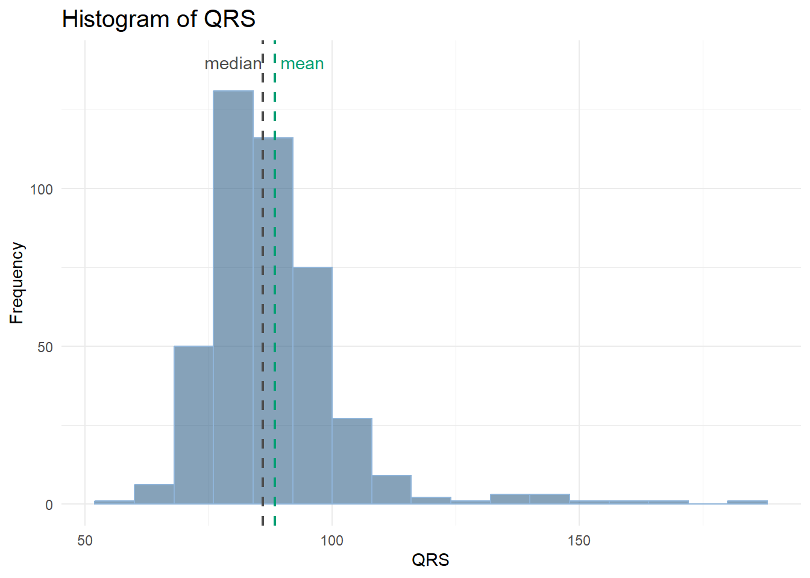
A histogram gives information about:
- How the data are distributed (symmetrical or asymmetrical) and if there are any outliers.
- Where the peak (or peaks) of the distribution is.
- The amount of variability in the data.
# density plot of age
arrhythmia %>%
ggplot(aes(x = age)) +
geom_density(fill="steelblue4", color="#8fb4d9", adjust = 1.5, alpha=0.6) +
theme_minimal(base_size = 16) +
labs(title = "Density Plot: age", y = "Density")
# density plot of QRS
arrhythmia %>%
ggplot(aes(x = QRS)) +
geom_density(fill="steelblue4", color="#8fb4d9", adjust = 1.5, alpha=0.6) +
theme_minimal(base_size = 16) +
labs(title = "Density Plot: QRS", y = "Density")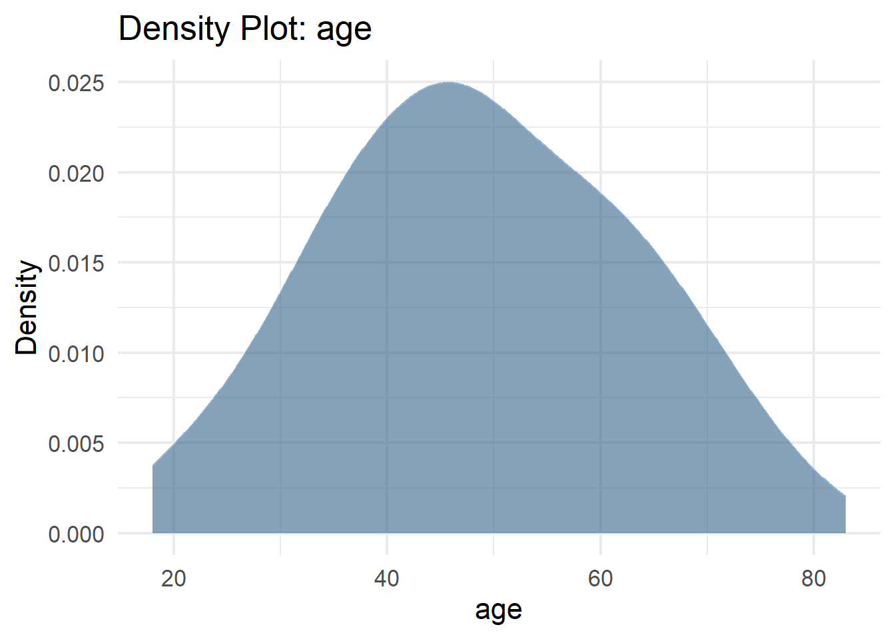
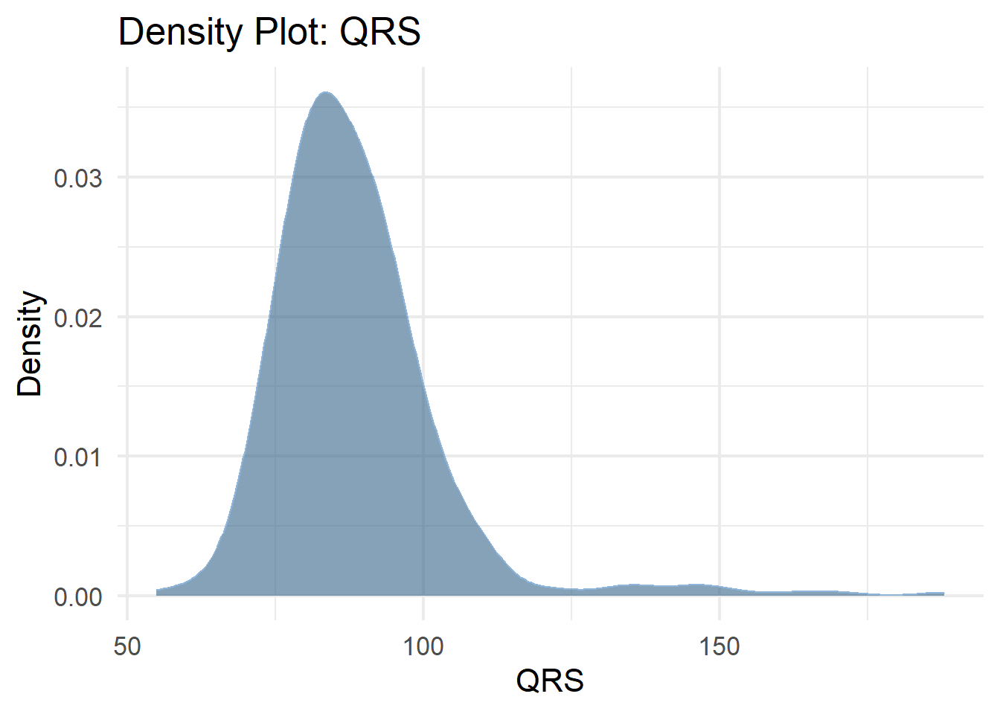
B. Box Plot
Box plots can be used for displaying location and dispersion for continuous data, particularly when comparing distributions between many groups (Figure 2.8). This type of graph uses boxes and lines to depict the distributions. Box limits indicate the range of the central 50% of the data, with a horizontal line in the box corresponding to the median. Whiskers extend from each box to capture the range of the remaining data. Data points that are outside the whiskers are represented as dots on the graph and considered potential outliers.1
1 An outlier is an observation that is significantly distant from the main body the data. We say any value outside of the following interval is an outlier: \[(Q_1 - 1.5 \times IQR, \ Q_3 + 1.5 \times IQR)\]
# box plot of age stratified by sex
arrhythmia %>%
ggplot(aes(x = sex, y = age, fill = sex)) +
geom_boxplot(alpha = 0.6, width = 0.5) +
theme_minimal(base_size = 16) +
labs(title = "Grouped Box Plot: age by sex") +
scale_fill_jco() +
theme(legend.position = "none")
# box plot of QRS stratified by sex
arrhythmia %>%
ggplot(aes(x = sex, y = QRS, fill = sex)) +
geom_boxplot(alpha = 0.6, width = 0.5) +
theme_minimal(base_size = 16) +
labs(title = "Grouped Box Plot: QRS by sex") +
scale_fill_jco() +
theme(legend.position = "none")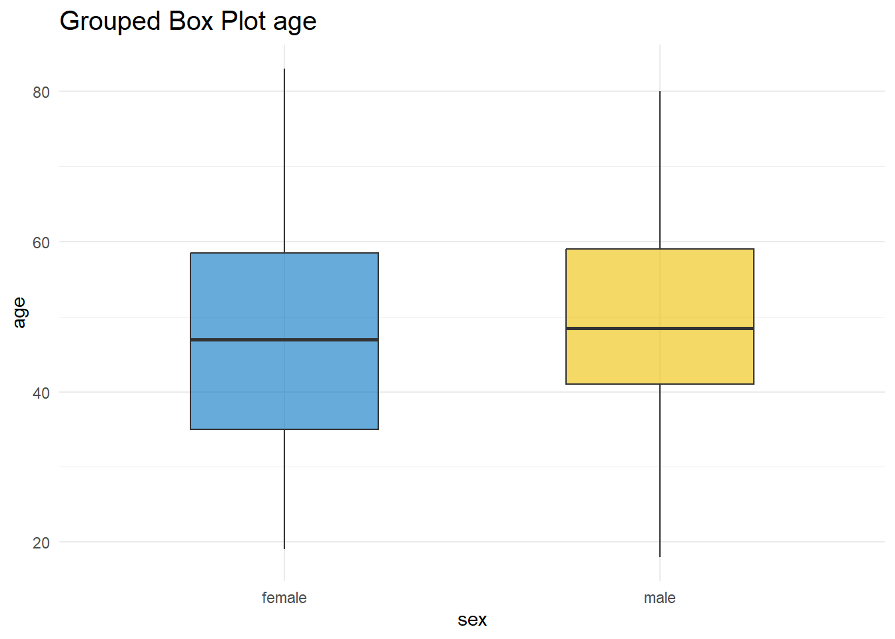
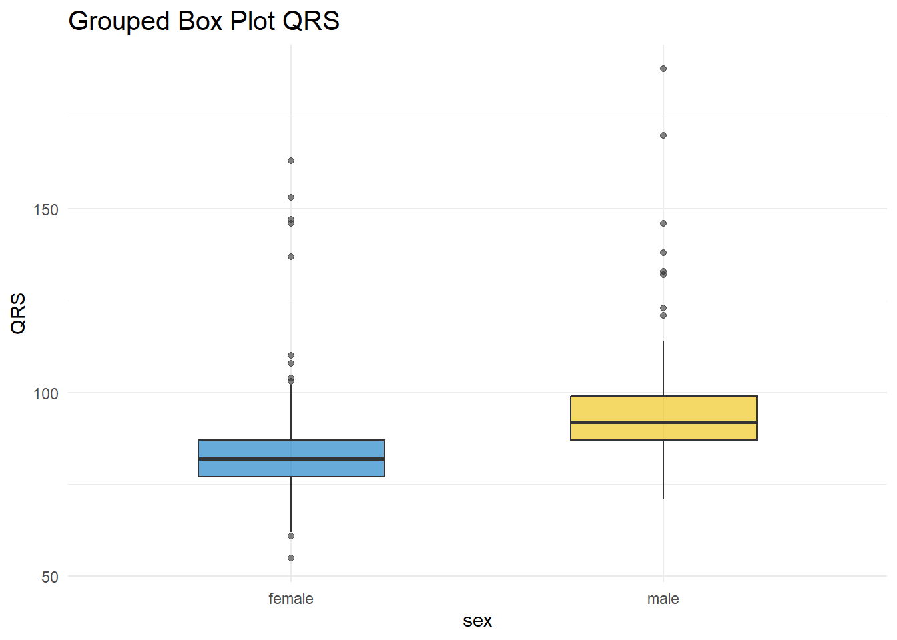
In Figure 2.8 a, box plots of age are approximately symmetric about the median for females and males. On the contrary, in Figure 2.8 b, both distributions of QRS data are positively skewed; the box plots show the medians closer to the lower quartiles (q25) and we observe many outliers at the upper range of the data for females and males.
C. Raincloud Plot
There are many variations of the box plot. For example, there is a way to combine raw data (dots), probability density, and key summary statistics such as median, and relevant intervals of a range of likely values for the population parameter, in an appealing and flexible format with minimal redundancy, using the raincloud plot (Figure 2.9):
# raincloud plot of age stratified by sex
arrhythmia %>%
ggplot(aes(x = sex, y = age, fill = sex)) +
stat_slab(aes(thickness = stat(pdf*n)),
scale = 0.5) +
stat_dotsinterval(side = "bottom",
scale = 0.5,
slab_size = 0.2) +
theme_minimal(base_size = 16) +
labs(title = "Grouped Raincloud Plots: age by sex") +
scale_fill_jco() +
theme(legend.position = "none")
# raincloud plot of QRS stratified by sex
arrhythmia %>%
ggplot(aes(x = sex, y = QRS, fill = sex)) +
stat_slab(aes(thickness = stat(pdf*n)),
scale = 0.5) +
stat_dotsinterval(side = "bottom",
scale = 0.5,
slab_size = 0.2) +
theme_minimal(base_size = 16) +
labs(title = "Grouped Raincloud Plots: QRS by sex") +
scale_fill_jco() +
theme(legend.position = "none")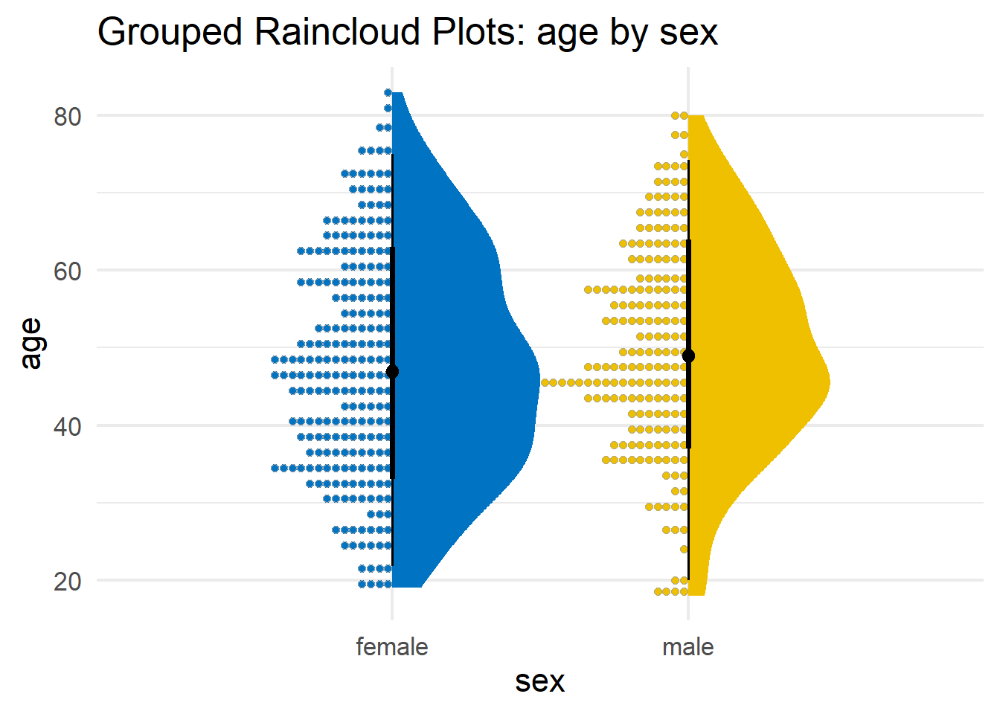
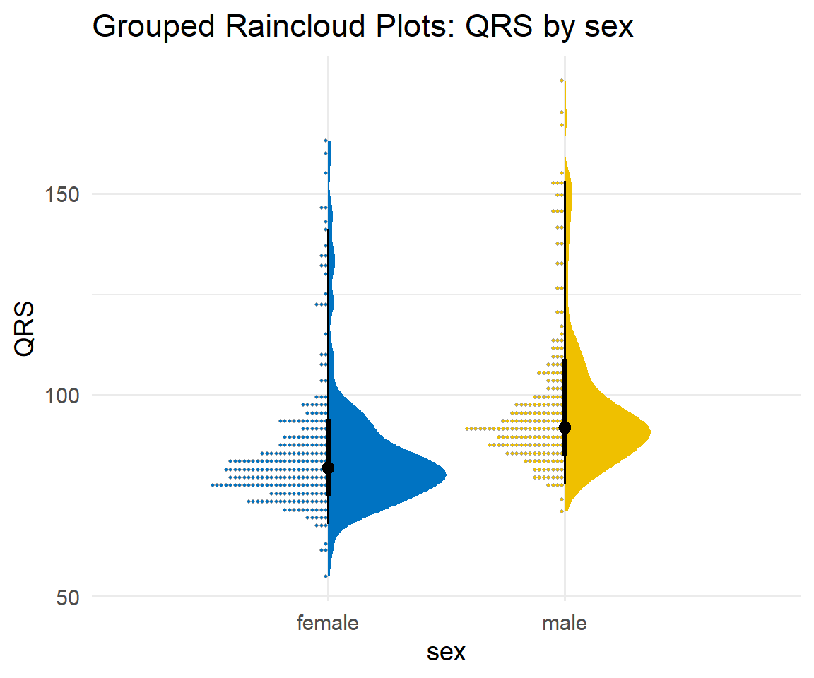